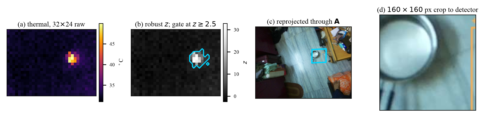
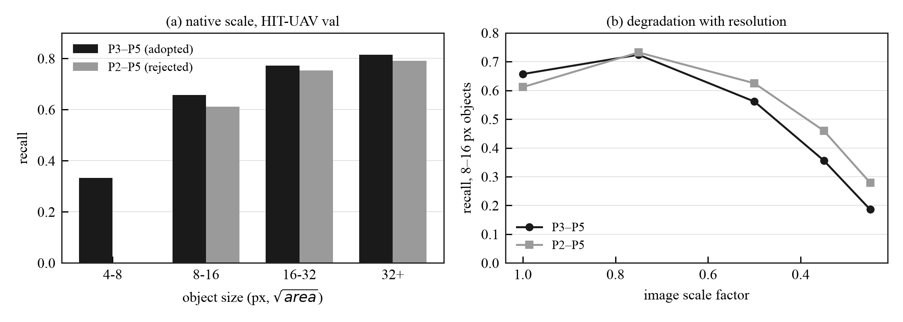
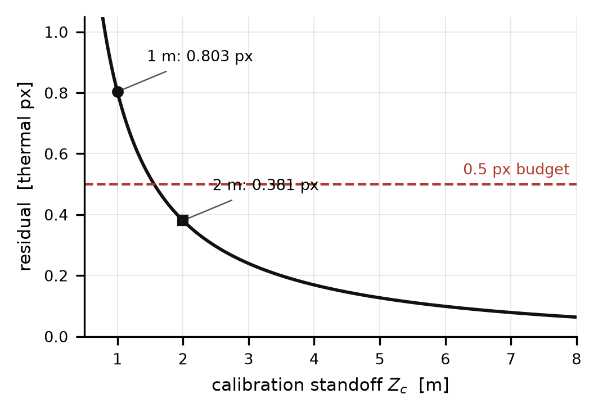
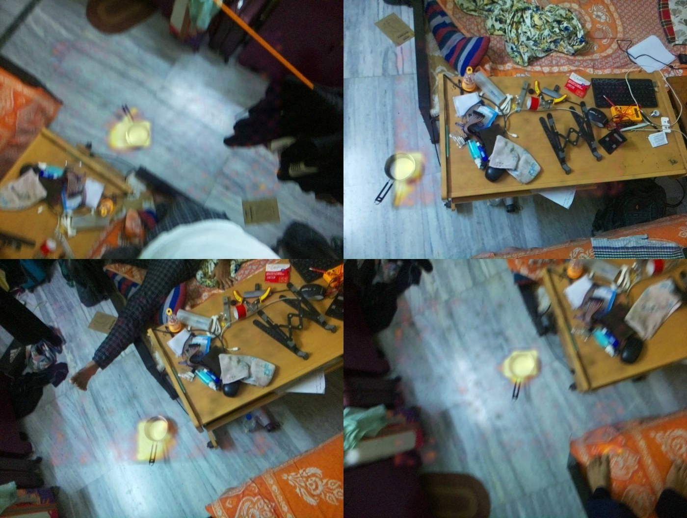
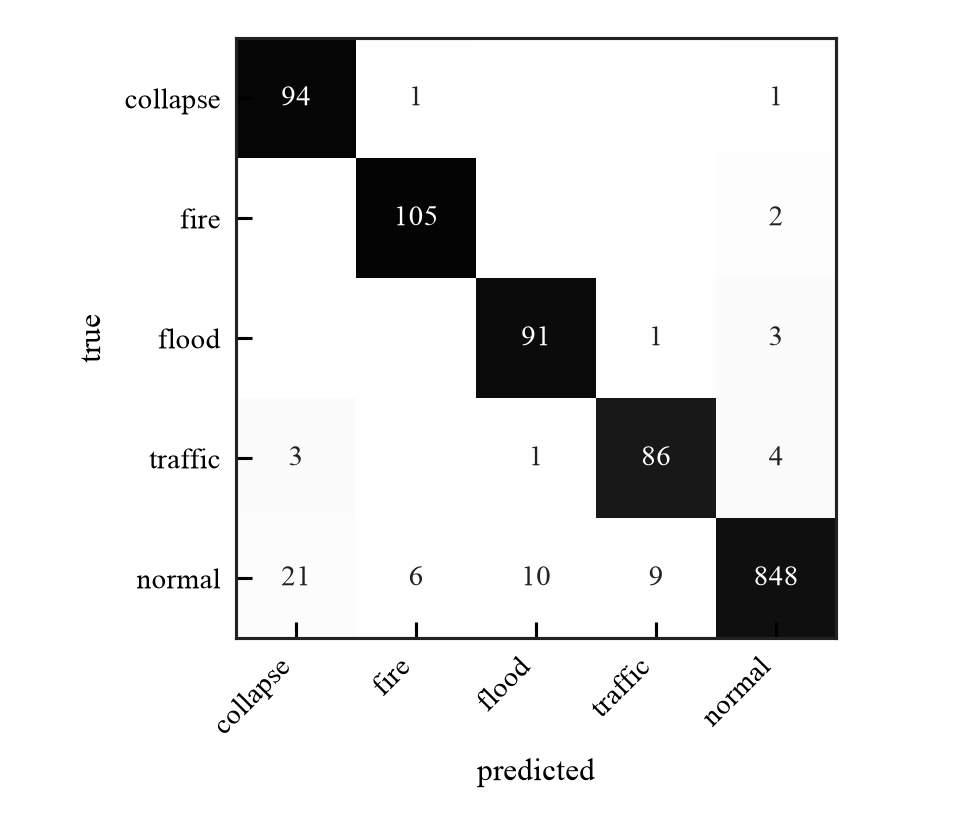
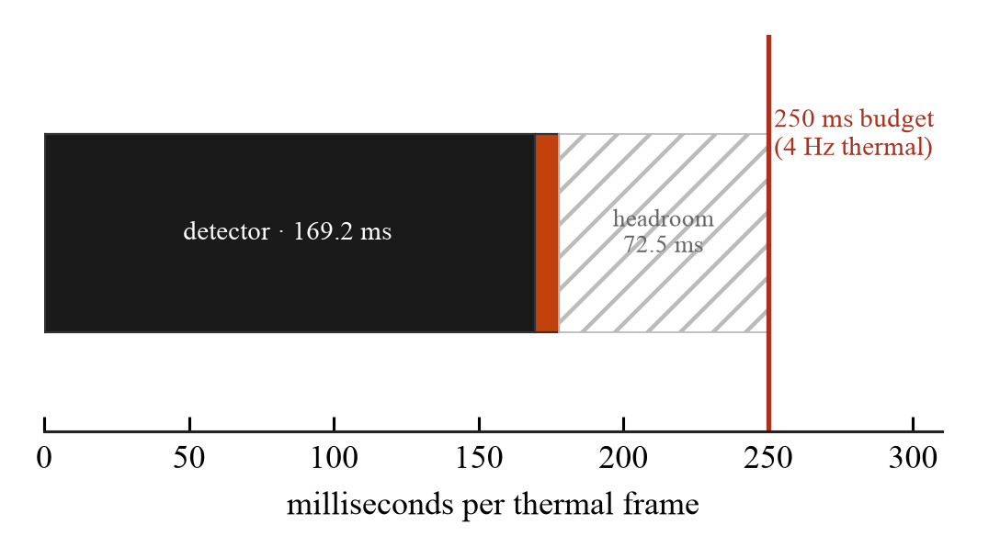
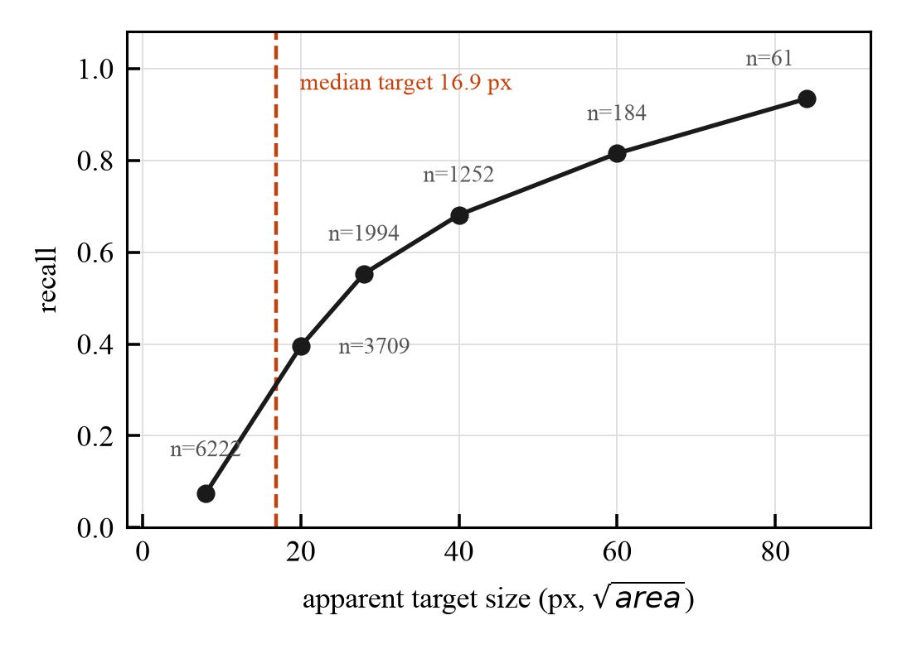
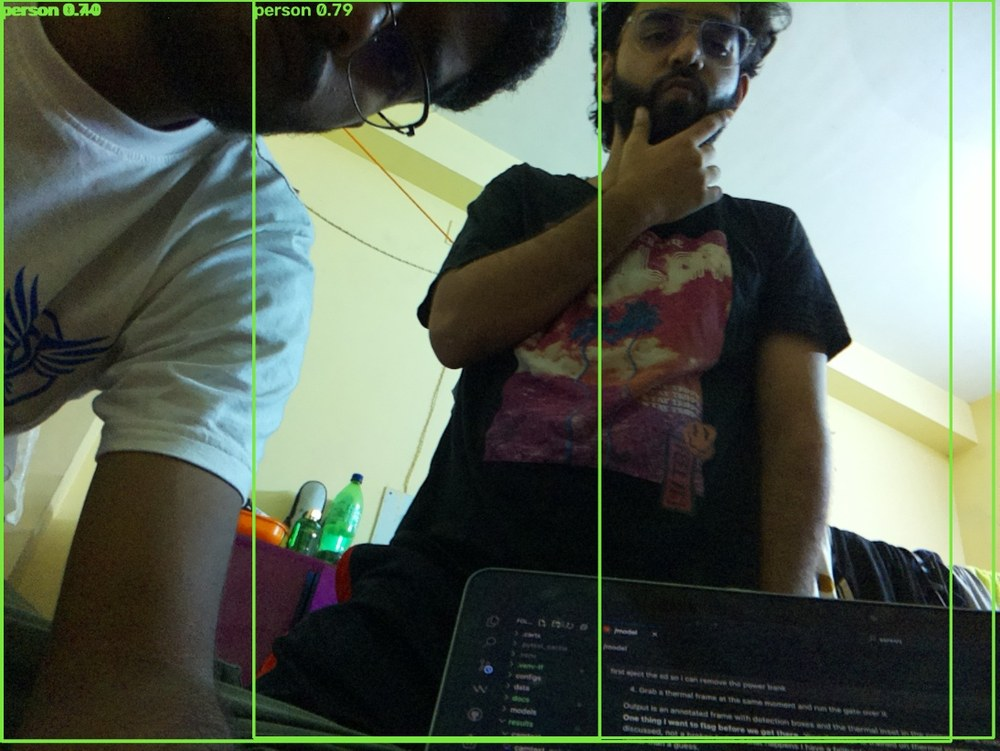

Team SaResQ (IIC_TMSL_P13_H21) · Techno Main Salt Lake, Kolkata, India
Smart India Hackathon 2026, Problem Statement SIH26177 — Robotics and Drones
Payload firmware, datasets and evaluation scripts: github.com/<saresq> · commit a6b8d47
Abstract—Aerial search and rescue needs a sensor that works at night and a processor that fits on a small battery-powered airframe. These two requirements are usually in tension: the radiometric thermal cores used in the literature cost more than the rest of the aircraft, and the multispectral fusion networks that exploit them need a desktop GPU. We present SaResQ, a search-and-rescue payload built entirely from commodity parts around a Raspberry Pi 4 (1 GB) and a 32×24 MLX90640 thermal array, and show that a nominate-then-confirm cascade closes the gap. A non-learned robust z-score test over the thermal frame—median and median absolute deviation rather than mean and standard deviation, so that a warm body cannot inflate the threshold meant to find it—nominates two to six candidate regions per frame at negligible cost. Only those regions are passed to a YOLOv8-nano detector, which therefore performs between 1/16 and 1/3 of the arithmetic of a whole-frame detector. Candidates are projected into the visible camera through a six-parameter affine registration fitted by RANSAC over 38 automatically-detected correspondences, achieving a reprojection residual of 0.506 thermal pixels, 7.4× better than the nominal scaling it replaces. A MobileNetV2 scene classifier supplies disaster context at 95.2% accuracy. Candidates are carried across frames by an ego-motion-compensated SORT tracker—a constant-velocity Kalman filter associated by the Hungarian algorithm, whose predictions are first displaced by a similarity transform derived from GNSS and gyroscope, without which a 95 px-per-frame drift at survey speed fragments every track—projected to latitude and longitude through a complementary-filter attitude estimate, and maintained on the ground as alpha-beta map tracks with Kalata gains and a χ2 validation gate. A log-odds ledger accumulates evidence across repeated passes over the same ground position. On the target hardware the detector runs in 28.2 ms per 160 px crop and the complete six-candidate worst case consumes 177.5 ms of a 250 ms frame budget, a 29% margin, in 95.2 MB of resident memory. The shipped detector attains Person AP50 of 0.851 on HIT-UAV and 0.478 on RGBTDronePerson-thermal. We contrast this against a 2018 result on comparable hardware that reported 0.18 FPS for embedded CNN pedestrian detection, and against current RGBT fusion networks that require 22× the parameters and a discrete GPU. The system has been flown end-to-end: a field trial produced 41 captures, 247 evidence artefacts and zero errors with the SoC thermally unthrottled throughout. We further report three findings that bench work surfaced and that we have not seen quantified elsewhere for this sensor class. Approximately half of all frames from the thermal array arrive internally torn between its two interleaved subpages; because the gate is relative, tearing inflates the dispersion the threshold is scaled by and so suppresses true detections rather than creating false ones. A two-mean test raises measured significance on the same subjects from 3.5 to 4–6 σ. Extending the cascade one hop across the radio link to re-score uploaded crops on the ground station shows that input resolution, not model capacity, carries the gain, by roughly 4×. And a sub-pixel registration floor of 0.12 px median but 1.1 px maximum on low-texture 32×24 frames limits multi-frame reconstruction and, left unconstrained, manufactured apparent movement in 28.3% of frames of a stationary scene.
Index Terms—Unmanned aerial vehicles, search and rescue, thermal imaging, embedded computer vision, object detection, sensor registration, model quantisation, motion detection, image reconstruction.
The first seventy-two hours after an earthquake, flood or landslide dominate survival statistics, and the scarce resource in that window is not willingness but search coverage. A ground team sweeps rubble slowly and at risk to itself. A small unmanned aircraft can sweep faster, but only if something aboard decides what deserves a human being's attention—streaming raw video to an operator simply relocates the bottleneck.
That decision has to be made onboard, which imposes a budget. The aircraft is battery-powered, so computation is flight time. The payload must cost a fraction of the airframe. And for the mission to mean anything at night, the primary sensor must be thermal.
The literature resolves this budget by spending money. The flight-tested system of Hinzmann et al. [1], developed with Switzerland's air-rescue service, pairs a FLIR Tau2 640×480 core with an NVIDIA Jetson TX2. Current multispectral detectors such as COXNet [3] and TFSANet [4] assume the same class of thermal imager and are trained and benchmarked on desktop GPUs. Their accuracy is not in question; their bill of materials is.
We took the opposite constraint as given: a 32×24 MLX90640 thermal array costing roughly 3% of a Tau2, a Raspberry Pi 4 with 1 GB of RAM, and a total payload budget near ₹14,000. This is not a smaller version of the same design. At a 20 m survey altitude the thermal ground sample distance is 651 mm, so a prone adult subtends 2.61 thermal pixels (Section III-B). No amount of model capacity recovers a person from 2.6 pixels. The thermal path can therefore only ever be an anomaly detector, never a classifier of people—and once that is accepted, the architecture follows.
Our contribution is the arrangement rather than any single component:
1) A non-learned thermal gate built on robust statistics (median/MAD) that nominates candidate regions at essentially zero cost and is scale-free, so that identical code runs on radiometric degrees Celsius from the MLX90640 and on 8-bit public thermal datasets (Section IV-A).
2) A cascade in which the convolutional detector never sees a whole frame, reducing its work to between 1/16 and 1/3 of a whole-frame detector and making per-frame latency a function of scene content rather than image size (Sections IV-C, VI-F).
3) A measured cross-modal registration for a sensor pair whose 27 mm baseline and 45:1 resolution ratio make manual correspondence annotation infeasible, solved by automatic sub-pixel target detection (Section IV-D), together with an explicit depth-error analysis that fixes the calibration standoff distance (Section VI-D).
4) An empirical result that contradicts the intuitive design: the stride-4 P2 detection head, the standard prescription for small-object detection, was built, trained identically, and lost to P3–P5 in every object-size bin at twice the compute (Section VI-B).
5) A complete, individually validated downstream stack—ego-motion-compensated tracking, attitude estimation, georeferencing and ground-side track management—specified in Section IV-G to IV-J and inventoried with its deployment status in Table II, so that what flies today is distinguished from what is implemented and tested.
6) A quantisation finding with consequences beyond this system: full INT8 quantisation degraded the detector to 31.9% of reference accuracy silently—the model loaded, ran fast, and returned plausible boxes—because 8-bit activations corrupt the Distribution Focal Loss normalisation constant. Quantising weights only (w8a32) recovers 99.2% at an identical file size (Section VI-C).
Hinzmann et al. [1] is the closest system-level reference and the most useful. They run two independent RetinaNet-50 detectors, one per modality, and—importantly for us—their fusion is geometric rather than learned: a thermal box is mapped into the optical frame by stereo calibration, a sliding window nine times the box size is searched over 36 positions, and matches at IoU ≥ 0.5 are merged by a logical OR with averaged scores. Of all the fusion schemes surveyed here this is the only one transferable to our sensor pair, because it operates on boxes rather than feature maps. Their custom anchor scales raised training-contributing samples from 57.7% to 97% (optical) and 33.2% to 88.1% (thermal), solving by anchor design the same small-object problem we address in Section VI-B. Their headline metric—fewer than 30% of individuals missed across a mission at under one false positive per image—is deliberately a per-mission rather than per-frame quantity, which is structurally the same argument our log-odds ledger makes in Section IV-F.
De Oliveira and Wehrmeister [2] is the nearest match to our constraints in the whole literature: a Raspberry Pi 2, a FLIR Lepton 80×60 thermal imager, a Raspicam, and a 15–20 m survey altitude. Their measured result is the one we quote most often: CNN inference with thermal on the Pi 2 ran at 0.18 FPS—5.5 seconds per frame—against 14 FPS for HOG+SVM, leading them to conclude that CNNs "require many computational resources making real-time embedded processing difficult." They did not fuse the modalities; the two ran in parallel for different jobs. Their classifier reached 99.71% on clean full pedestrians but 71.1% under 25% occlusion.
Our architecture is a direct answer to that conclusion. We reach 28.2 ms per crop on the same class of hardware not because the network is better but because the gate decides where to spend it. The comparison is developed in Section VII.
COXNet [3] fuses high-level visible with low-level thermal features through a wavelet-based alignment module, adds dynamic scale refinement and a geometry-aware label assignment, and reaches 47.18 mAP50 on RGBTDronePerson at 51.27 GFLOPs and 71.11 M parameters; its P2–P6 variant reaches 51.82 at 123.59 GFLOPs. TFSANet [4] adds transformer fusion with scale-aware attention and reports 86.56 AP on NII-CU and +4.33 AP on RGBTDronePerson.
Both assume a 640×512 thermal input. Ours is 32×24—768 pixels against 327,680, a factor of 426. Pushing a 32×24 frame through a standard backbone yields 8×6 at stride 4 and 4×3 at stride 8: there is no thermal feature pyramid to fuse. This is an information limit, not a compute limit, and it is not recoverable by quantisation or by shrinking the model. We therefore adopt the geometric merge of [1] and cite [3], [4] as the state of the art we can characterise but not run.
The detector is YOLOv8-nano [5], anchor-free with distributional box regression [7]. The scene classifier is MobileNetV2 [6] transferred to AIDER [10]. Robust scale estimation follows the MAD treatment of Rousseeuw and Croux [12]; the affine fit uses RANSAC [11]. Calibration quality is assessed with the expected-calibration-error framing of Guo et al. [15], and quantisation follows the weight/activation separation described by Jacob et al. [16].
The payload is assembled entirely from commodity parts (Table I). The compute element is a Raspberry Pi 4 Model B rev a03115 with 1 GB of RAM, of which roughly 905 MB is usable after the operating system. The runtime is deliberately minimal—ai-edge-litert 2.2.0, NumPy and headless OpenCV, with neither TensorFlow nor PyTorch installed—because the full frameworks would not fit alongside the models.
| Element | Part | Property |
|---|---|---|
| Compute | Raspberry Pi 4B, 1 GB | 905 MB usable |
| Thermal | Melexis MLX90640 [13] | 32×24, 4 Hz |
| field of view | 55° × 35° | |
| noise-equivalent ΔT | 0.1 K | |
| Visible | Sony IMX219 | 1640×1232 |
| field of view | 62.2° × 48.8° | |
| focal length | 1359.3 px | |
| Baseline | lens-centre separation | 27 mm |
| IMU | MPU-6050 | I2C 0x68 |
| GNSS | u-blox NEO-6M | NMEA, 9600 Bd |
| Bus | I2C | 400 kHz |
The I2C rate is load-bearing rather than incidental: at the default 100 kHz the MLX90640 frame tears across its subpage boundary, producing a chequerboard artefact that survives into the gate as spurious contrast.
The design follows from a single arithmetic fact. For a sensor of horizontal field of view θ and N pixels across, at altitude h, the ground sample distance is
At h = 20 m with θ = 55° and N = 32, the thermal swath is 20.82 m wide and GSD = 651 mm. A prone adult of 1.7 m therefore spans 2.61 thermal pixels. The visible camera at the same altitude gives GSD = 14.7 mm, so the same person spans about 116 pixels.
Two consequences shape everything downstream. First, the thermal sensor cannot classify: 2.6 pixels carry the presence of an anomaly, its rough extent and its sign, and nothing else. Second, the visible camera can classify but cannot be searched exhaustively within the power budget. The cascade exists to route the thermal sensor's cheap, high-recall evidence into the expensive, discriminative one.

The MLX90640 does not expose a frame. It exposes two interleaved subpages: pixel (r, c) belongs to subpage (r + c) mod 2, a chessboard, and the two are integrated at different instants. A read that straddles a refresh therefore returns an array whose halves describe the scene at two different moments. The result is not noisy in any way a filter recognises—it is two valid images woven together.
The consequence is worse than a corrupted frame, because the gate of Section IV-A is relative. A torn frame inflates the frame's own dispersion, and since the threshold is zt scaled by that dispersion, the artefact raises the bar the casualty has to clear. The sensor defect does not add false positives; it suppresses true ones, silently, and in proportion to how badly torn the frame is.
Detection needs no model. Both subpages sample the same scene, so on an intact frame their means agree; on a torn frame they do not. Writing μA and μB for the two subpage means, a frame is rejected when
The threshold is set by measurement rather than taste. On the payload captures retained in results/thermal/ the two subpages agree to 0.051 K and 0.059 K—below the sensor's own 0.1 K NETD—so 0.60 K sits an order of magnitude above the intact case and cannot discard good data. The test costs two means over 768 values and runs before anything else in the chain.
Section VI-M reports what rejection is worth. We note here only that the artefact is a property of the part, not of our wiring: it follows from the datasheet's own readout description, and any system sampling this sensor asynchronously to its refresh will meet it. We have not seen it quantified in the embedded search-and-rescue literature, where this sensor family is otherwise popular.
The gate answers one question per frame: which pixels differ from this scene's own background more than sensor noise and clutter explain? It is a statistical test, not a learned model, and that is deliberate—it must run on every frame within a budget of approximately zero.
The obvious formulation, z = (t − μ)/s with sample mean and standard deviation, fails for a specific reason: a warm body in the frame raises both μ and s, inflating the very threshold intended to detect it. The breakdown point of the standard deviation is zero. We therefore estimate background and scale with the median and the median absolute deviation [12], whose breakdown point is 50%:
The factor 1.4826 makes σ a consistent estimator of the standard deviation under Gaussian noise, so that the threshold retains its familiar interpretation. The floor σmin = 0.15 K prevents division by a collapsed scale in a perfectly flat scene, where MAD tends to zero and any quantisation step would otherwise read as infinite contrast. A pixel is nominated when
Two details in (4) are mission-specific. The test is two-sided: on sun-heated concrete or rubble a human body is frequently colder than its surroundings, and a one-sided "warmer than background" test—the intuitive choice—misses exactly that regime. The additive ΔTmin term, expressed in kelvin rather than in units of σ, stops the gate firing on pure sensor noise when σ has hit its floor. Because z is dimensionless, the same thresholds apply unchanged to radiometric Celsius and to the 8-bit thermal imagery of public datasets, which is what allows the gate to be evaluated offline at all.
Nominated pixels are grouped into 8-connected components; components below 2 pixels are discarded as speckle. For each surviving blob we record the peak z, the signed peak ΔT, the sign, the area in thermal pixels, and the eccentricity of its second-moment ellipse. The blob's position is taken as the intensity-weighted centroid
which recovers sub-pixel position from a handful of pixels and is the reason the registration of Section IV-D can be fitted at all.
Each blob centroid is mapped into visible-image coordinates by (6) and a square crop is cut around it—160 px for typical blobs, 224 px when the blob's reprojected extent demands it. The gate is tuned permissively, yielding two to six crops per frame; in search and rescue a false alarm costs an operator a few seconds while a miss can cost a life, so the burden of rejection is deliberately pushed onto the later, more discriminative stages.
The detector is a YOLOv8-nano [5] with the P3–P5 head (strides 8, 16, 32), 3,011,628 parameters at four classes and 8.19 GFLOPs at 640 px. At the deployed 160 px crop size the head exposes 525 anchor points against 8,400 at 640 px.
YOLOv8 is anchor-free and regresses each box side as a distribution rather than a scalar [7]. Each side d is represented by a softmax over rmax = 16 bins and decoded as the expectation
which lets the network express genuine ambiguity about an edge—valuable when the object is twelve pixels tall. Equation (6) is also precisely where quantisation breaks the model (Section VI-C). Non-maximum suppression runs in NumPy on the host rather than inside the graph, avoiding a second framework dependency.
The choice of the nano scaling is load-bearing rather than a default. By the time a crop reaches the detector, the gate has already asserted that something anomalous is centred in it; the detector answers a much easier question than a whole-frame detector does.
Mapping a thermal blob into the visible frame requires a transform between sensors whose resolutions differ by 45:1—one thermal pixel subtends about 45 visible pixels. We model the mapping as a six-parameter affine
fitted by RANSAC least squares [11] over N correspondences, minimising
An affine rather than a homography is appropriate here because the thermal array's angular resolution cannot resolve the perspective terms; adding them fits noise.
The practical obstacle is annotation. A human clicking a correspondence to the nearest thermal pixel commits, after scaling, a 45-pixel error in the visible frame—larger than any sensible RANSAC inlier threshold, so hand-labelled points are not merely imprecise, they are systematically rejected. We therefore detect correspondences automatically: the thermal target is localised to sub-pixel accuracy by (5), and its visible counterpart is found by a Hough circle search restricted to a window predicted from the thermal centroid through the nominal field-of-view ratio. A heated vessel of water served as the target, giving both a strong thermal signature and a circular visible outline. Thirty-eight correspondences were collected over a spatial spread selected by greedy farthest-point sampling, with zero operator clicks.
Because an affine is exact for a single plane at a single depth, the calibration standoff is not arbitrary. For a stereo pair of baseline b and focal length f, a calibration at range Zc applied at operating range Zf leaves a residual disparity
Equation (9) is what fixes the bench procedure, and Section VI-D reports its consequences.
A MobileNetV2 [6] classifier, transferred from ImageNet and fine-tuned on AIDER [10], labels the visible frame as one of collapsed building, fire, flooded area, traffic incident or normal. It runs on its own thread at 1 Hz—scene type changes on the scale of a flight leg, not a frame—so its 33.0 ms cost amortises to 8.25 ms per thermal frame. The thread is fail-safe: if the classifier throws or is absent the cascade continues with the context features zeroed, because a scene label is contextual evidence and never a gating condition.
Each candidate is summarised by an 18-element feature vector spanning five evidence sources: thermal shape (zpeak, ΔT, sign, area, eccentricity), the visible detector (score, presence flag, relative box area), registration agreement (IoU, normalised centroid distance), temporal persistence (hits, hit ratio), and scene context (Tbg, luminance, the three hazard probabilities, altitude band). A logistic regression maps this to a calibrated probability
A linear model is chosen over a stronger one because calibration matters more than ranking here: the ledger below adds these quantities across passes, so a systematic bias compounds rather than averaging out, and an operator must be able to read the number as a probability.
A ground position observed on several passes accumulates evidence in log-odds. Writing π0 for the prior, the ledger for a target after K passes is
The discount in (12) is the one departure from naive Bayesian accrual, and it corrects a real failure mode: repeated observations from the same altitude and aspect are strongly correlated, so treating them as independent would drive a persistent thermal artefact—a sun-warmed rock—to certainty simply by looking at it repeatedly. Requiring a new viewing geometry to earn full weight makes the ledger reward genuinely new evidence. The final probability is p = σ(L), and the decision is CONFIRM at p ≥ 0.90, REJECT at p ≤ 0.10, and otherwise re-observation at a lower altitude band until a pass limit is reached. This mission-level rather than frame-level criterion mirrors the evaluation protocol of [1].
A survey aircraft's own motion dominates a survivor's. At 14 m/s and 20 m with f = 1359.3 px, a stationary ground point translates f v Δt/h = 95 px per 100 ms in the visible image. A constant-velocity tracker initialised from one detection with zero velocity therefore loses a stationary casualty on the very next frame. Association must run on ego-motion-compensated predictions.
We predict the inter-frame image motion from sensors already carried, rather than estimating it from the images. Given GNSS ground speed v and course χ, camera yaw ψ, and body rates (p, q, r) from the gyroscope, the frame-to-frame map is a similarity transform with
with ty taking the cosine term and f p Δt. A track's predicted position is then rotated about the image centre and translated, x′ = R(θ)(x − c) + c + t, before the motion filter runs. This ordering is the whole point: the filter is then left modelling only the target's own motion, which for a survivor is zero.
Residual motion is carried by a four-state constant-velocity Kalman filter [21] with state x = (u, v, u̇, v̇) in image pixels:
with Q = 4I, R = 9I px2 and H selecting position. Detections are assigned to tracks by the Hungarian algorithm [17] on the cost
following SORT [18]. A track is confirmed on 2 hits within a 3-frame window and deleted after 5 consecutive misses. The same predicted transform, rescaled into thermal-pixel units by the measured across- and along-track ratios (45.3 and 36.8 visible px per thermal px), drives a blob persistence counter in the 32×24 thermal frame with a 1.5 thermal-pixel match radius; that counter supplies the hits and hit_ratio features of (10).
A pixel becomes a map coordinate through the platform's attitude. Roll and pitch are recovered from the accelerometer's gravity direction, φ = atan2(ay, az) and θ = atan2(−ax, √(ay2+az2)), and fused with the gyroscope by a complementary filter
after a start-up gyro-bias average over stationary samples. The filter is a deliberate choice over a full attitude Kalman filter: with one accelerometer and one gyroscope the steady-state solution is a fixed blend, and (17) simply starts there. Yaw is not observable from this sensor—there is no magnetometer—so heading comes from GNSS course over ground while the aircraft is moving, which is stated here because it is a real constraint on the localisation claim rather than an implementation detail.
The pixel is then cast as a ray and intersected with a level ground plane:
giving east and north offsets s dg,x and s dg,y, converted to latitude and longitude at 111,320 m per degree with the usual cos(lat) scaling on longitude. The flat-ground assumption and the GNSS fix dominate this error budget; the rotation convention does not.
Confirmed detections arriving at the ground station are maintained as map tracks by a two-axis alpha-beta filter in local metres rather than degrees—filtering in degrees would make the east and north gains differ by cos(lat), a silent bug that appears as a track drifting sideways. Gains are not hand-tuned but taken from Kalata's steady-state solution [19] for the tracking index L = σaT2/σz:
This leaves exactly one physical knob, the ratio of how far process noise can move the target in one scan to how well it can be measured, and it costs two multiplies per axis—which matters because the same code must run on the Pi. Benedict–Bordner variance reduction factors [20] turn α, β into smoothed position and velocity variances, so the uncertainty ellipse drawn for an operator carries a computed number rather than a guess. A plot is associated only inside a validation gate of radius
The 99.73% point is chosen deliberately: in search and rescue, splitting one survivor across two tracks costs far less than silently discarding a real detection. Tracks are initiated M-of-N (3 of 4) and move through TENTATIVE, FIRM, COAST and either DROPPED or HELD after five consecutive coasts.
One profile deserves explicit mention. For a casualty the filter runs in a static mode with α = 1, β = 0 and position variance fixed at σ2z. A survivor lying in rubble is not moving, so the constant-velocity dead-reckoning term 1⁄2at2 is not merely unhelpful but actively misleading—left enabled it draws a 300 m uncertainty circle around someone who has not moved a metre. A fix on a stationary object does not become less certain with time; it becomes older, and age is displayed separately.
The final label is assigned from the evidence pattern, not from p alone. A high score with no visible corroboration is capped at MEDIUM, and a visible detection with no thermal support (zpeak < zt) is forced to LOW regardless of its own score, because in this system a person is a thermal object first. HIGH requires p ≥ 0.80 together with visible corroboration at IoU ≥ 0.10 and at least two hits.
Three classes are, however, too coarse for the operator-facing verdict, and a bench trial showed why. Over two sleeping subjects the gate fired correctly at 4–6 σ on blobs at 33.1–34.4 °C; the crops it handed the detector had mean luminance 8–21 of 255, because the room was unlit and an unilluminated rolling-shutter camera has no signal. The visible branch was not disagreeing. It was blind, and the console reported its silence as "no person confirmed"—turning a missing measurement into a negative one. At night over rubble a blind visible branch is the normal case; it is the entire reason the payload is thermal-first.
The payload therefore separates three questions that the three-class scheme conflates: is there a body-temperature source, did it move, and could the visible branch see anything at all. The last is answered by the mean luminance of the crop belonging to the strongest thermal candidate—not the brightest crop in frame, which lets one sunlit window certify a camera that is blind where the casualty actually is. Writing nvis for visible detections, g for the gate, m for motion (Section IV-L) and b for blindness, the verdict is the first matching rule of
| LIVE PERSON | g ∧ m ∧ nvis>0 |
| LIVE BODY | g ∧ m |
| PERSON | nvis>0 ∧ g |
| VISUAL ONLY | nvis>0 |
| BODY HEAT | g ∧ b |
| HEAT | g |
| CLEAR | otherwise |
Two orderings in (22) are deliberate and are the substance of the rule. First, a moving body outranks a bare visible detection. A COCO-trained detector will box a mannequin, a coat on a chair, a poster, a photograph—and a corpse. Body temperature together with independent movement are two physical measurements agreeing that a living human is present, which no appearance model can assert. Second, BODY HEAT sits immediately below the moving cases rather than near the bottom, because motion proves life but its absence proves nothing: an unconscious casualty, the most medically urgent person on any site, does not move. The ladder ranks confidence that a living human is present. It is not a triage order and it is not the ledger's calibrated probability, both of which it is reported alongside.
| Component | Method | Status |
|---|---|---|
| Thermal gate | robust z, median/MAD (2)–(4) | payload |
| Blob extraction | 8-connected components, weighted centroid (5) | payload |
| Registration | 6-parameter affine, RANSAC (7), (8) | payload |
| Person detector | YOLOv8n P3–P5, w8a32, 3.01 M param | payload |
| Box decode | DFL expectation (6) + greedy per-class NMS, NumPy | payload |
| Visible detector | YOLOv8n COCO-80, w8a32 | payload |
| Scene classifier | MobileNetV2, INT8, 2.74 MB | payload |
| Ego-motion | GNSS+gyro similarity transform (13) | tested |
| Motion filter | 4-state constant-velocity Kalman (14), (15) | tested |
| Association | SORT, Hungarian on 1−IoU (16) | tested |
| Blob persistence | ego-compensated, thermal-space, 1.5 px | tested |
| Attitude | complementary filter, α = 0.98 (17) | tested |
| Georeferencing | pinhole ray / ground-plane intersection (18) | tested |
| Evidence fusion | logistic regression, 18 features (10) | instrumented |
| Confidence ledger | log-odds, correlation-discounted (11), (12) | tested |
| Verdict rules | pattern-based three-class assignment | tested |
| Subpage rejection | chessboard mean gap (21), 0.60 K | payload |
| Thermal motion | robust aligned difference (23), 1.0 px deadband | payload |
| Verdict ladder | seven-state evidence pattern (22) | payload |
| Multi-frame recon. | drizzle (24) [22], circular-variance diversity | payload, off |
| Contact projection | pinhole ray (18), operator-stated AGL | ground |
| Ground re-score | YOLOv8m @640, promote-only gate (25) | ground |
| Map tracker | alpha-beta, Kalata gains (19), χ2 gate (20), 3-of-4 | ground |
payload: runs in the flying build on the Pi. ground: runs in the ground station. tested: implemented and unit-tested against the acceptance criteria quoted in the text, but not in the current flying build—the payload build is deliberately minimal, and the tracking and georeferencing stages require the GNSS/IMU stream that indoor bench trials cannot supply. instrumented: trained and evaluated, reported in Section VIII-B, and not relied upon by any claim in this paper. payload, off: present in the flying build but disabled by default, for the reason given in Section VI-L. The suite is 223 tests.
A 34 °C blob says something is warm. It does not say whether that something is a casualty, a corpse, a car bonnet or a sun-warmed slab. Movement does, and it is the one further statement the thermal branch can make unaided—which matters precisely in the unlit case where the visible branch contributes nothing.
Three effects masquerade as movement and each is removed explicitly. Sensor noise: the threshold is derived from the difference image's own robust spread rather than fixed, so it tracks the sensor's state. Payload motion: the earlier frame is first brought onto the current frame's grid, so that only residual change survives. Thermal drift: differences are taken across about a second, far faster than a room or a sensor warms, and the median of the difference is removed so that a uniform shift cancels. For frames Ft and the aligned earlier frame F̂t−τ, with D = Ft − F̂t−τ − med(·),
with k = 4 and Δmin = 0.45 K. Motion is declared when M contains a connected region of at least four pixels whose peak exceeds 0.60 K, with a two-pixel border excluded. The flag is then held for eight seconds: a limb shifts and settles, and an indicator that blinks for one frame is one no operator sees.
The alignment step is not optional and is not free; Section VI-L reports what it cost us before it was constrained.
A 32×24 array is coarse enough that sub-pixel sampling is worth attempting. We implemented drizzle [22], the variable-pixel linear reconstruction developed for under-sampled Hubble imagery, which drops each input pixel onto a finer output grid as a shrunken footprint and accumulates an area-weighted sum. Given frames at offsets (δxk, δyk) relative to a reference, the output pixel Ij accumulates
where fk is the shrunken footprint of input pixel k and bj the output bin. Drizzle requires genuine sub-pixel diversity among the offsets, which we quantify as circular variance, 1 − |mean(exp(2πi frac(δ)))|, because fractional phase wraps and a linear spread would score a set clustered either side of an integer boundary as diverse when it is not. A reconstruction is reported as trustworthy only with at least three frames, diversity above 0.25 and output coverage above 0.98.
Two limits are worth stating in advance of the measurement. Drizzle recovers sampling, not the detector's own blur, and the MLX90640's roughly 100% fill factor means little scene information sits above Nyquist to recover. And the offsets must come from somewhere: in flight from inertial data, on a bench from the frames themselves. Section VI-L shows that on this sensor the second of these, not the first, is what binds.
The cascade of Section III ends at the aircraft only because that is where the compute ends. The ground station is a laptop, idle, holding every evidence crop the payload has already uploaded—so the same cascade can take one more step on hardware two orders of magnitude larger, without costing the aircraft a millisecond or a byte.
Each uploaded crop is re-scored by a larger detector at full resolution, and the result is stored alongside the payload's own score rather than replacing it. The review queue is then ordered by
The maximum, not the mean and not a replacement, and the asymmetry is deliberate: a second opinion may promote a candidate the payload nearly missed, but must never bury one the payload was confident about. A ground model disagreeing with the aircraft is a reason for a human to look sooner, not a reason to look later. Re-scoring is idempotent per artefact, so a re-run costs nothing and an interrupted one resumes. Section VI-K reports which of model capacity and input resolution actually carries the gain; the answer determined what we shipped.
The detector is trained on the union of two independently collected aerial-thermal corpora. HIT-UAV [8] provides clean, largely overhead campus scenes with four annotated classes. RGBTDronePerson [9] provides what HIT-UAV lacks—urban, night, oblique drone views—and annotates people only. Training across both answers a question one dataset cannot: whether the detector has learned people or has learned HIT-UAV.
| Corpus | train | val | classes |
|---|---|---|---|
| HIT-UAV [8] | 4,058 | 580 | 4 |
| RGBTDronePerson-thermal [9] | 4,900 | 1,225 | 1 |
| combined (2,029 + 4,900) | 6,929 | 1,515 | 4 |
| AIDER [10] (scene) | — | 1,286 | 5 |
HIT-UAV is subsampled into the combined set to limit its dominance. Files are hard-linked rather than copied, and carry hit_/rgbt_ filename prefixes precisely so that the validation split can be scored per source.
Two protocol decisions deserve statement. First, the label spaces are merged at four classes rather than reduced to one: class 0 is Person in both corpora, so keeping nc=4 carries the pretrained detection head over intact, whereas dropping to nc=1 would rebuild the class branch for no benefit. The accepted cost is that RGBTDronePerson frames contain unlabelled cars and bicycles, which become false negatives and degrade those classes. This is acceptable for a payload that acts only on Person, and is the reason we report Person AP50 throughout and never overall mAP.
Second, evaluation is per source, never pooled. The combined validation split is 81% RGBTDronePerson by count, so a single pooled number principally reports performance on the harder corpus while appearing to describe both. A combined model is treated as an improvement only if it holds HIT-UAV Person AP while raising RGBT recall—a rule we apply against our own candidate model in Section VI-A.
Training starts from COCO-pretrained weights on Apple-silicon MPS at 640 px, batch 12, with mosaic augmentation disabled for the final epochs. Checkpoint selection uses the Ultralytics fitness 0.1 mAP50 + 0.9 mAP50-95, so the retained checkpoint is chosen by the strict localisation metric rather than the headline one. A watchdog monitors the loss trace and aborts on non-finite or negative loss, on a threefold loss explosion, or on three consecutive epochs below half the best observed mAP50—a guard added after an fp16 failure produced a classification loss running 4.97 → 46 → −1224 without raising an exception.
Table IV reports the shipped detector against each corpus separately. The 0.851 HIT-UAV figure is directly comparable to the single-corpus baseline, and the 0.478 RGBT figure shows what generalisation to a genuinely different aerial-thermal domain currently costs.
| Model / corpus | imgs | AP50 | AP50-95 |
|---|---|---|---|
| Shipped (45 ep) · HIT-UAV | 580 | 0.851 | 0.379 |
| Shipped (45 ep) · RGBT | 1,225 | 0.478 | 0.153 |
| mean of the two | — | 0.664 | — |
| Continued (85 ep) · HIT-UAV | 290 | 0.868 | 0.419 |
| Continued (85 ep) · RGBT | 1,225 | 0.431 | 0.128 |
| mean of the two | — | 0.649 | — |
The 85-epoch continuation gains 0.017 on HIT-UAV and loses 0.047 on RGBT. Mean Person AP50 falls, so it fails the adoption rule of Section V and was not deployed. Its value was diagnostic: performance is flat from epoch 25 through 40 across a mosaic-augmentation transition, which indicates the training-duration lever is exhausted.
This negative result is worth stating plainly because a pooled score would have concealed it. Pooled mAP50 rose from 0.668 to 0.683 over the continuation—an apparent improvement that was in fact a trade of the harder domain for the easier one.
Small-object detection conventionally prescribes adding a stride-4 (P2) feature level. We built it, trained it identically, and it lost. Table V and Fig. 3 give the comparison.
| Head | anchors | GFLOPs | Person AP50 | mAP50 |
|---|---|---|---|---|
| P2–P5 (strides 4–32) | 34,000 | 17.43 | 0.801 | 0.588 |
| P3–P5 (strides 8–32) | 8,400 | 8.86 | 0.821 | 0.639 |
Anchor counts at 640 px. P2 costs 1.97× the arithmetic and 4.0× the anchor points for lower accuracy in every size bin.
The explanation is that P2's benefit is conditional on the small object being resolved but coarsely sampled. In our regime the limiting factor is information rather than sampling density, and the extra level mainly adds anchors that must be suppressed. Fig. 3(b) makes the point sharply: as images are progressively downscaled—simulating higher altitude—both heads collapse together, and neither crosses 0.20 recall once 8–16 px objects are reduced to a quarter scale. The system is information-limited, not capacity-limited. The same reasoning is why we did not migrate to a newer backbone: a candidate YOLO11n at four classes carries 2,590,620 parameters against our 3,011,628, a 14.0% reduction in capacity that addresses a constraint which is not binding.

Deployment requires an 8-bit export. Full INT8—weights and activations—is the default choice and was catastrophic here: the exported model scored 31.9% of the reference model's accuracy. Critically, it failed silently. It loaded, ran at the expected speed, and returned plausible-looking boxes; only a quantitative comparison against the float reference exposed it.
The cause is (6). The DFL decode is a weighted sum over 16 softmax bins followed by a normalisation by the input size. When activations are quantised, that normalisation constant is quantised with them: the effective divisor measured on the failing export was ≈636 instead of 640. A 0.6% scale error shifts every box centre by roughly 2.5 px—enough to drop IoU below threshold for small objects while leaving the output visually reasonable.
Quantising weights only (w8a32) fixes it at identical file size, because weights dominate storage while activations dominate arithmetic. Table VI reports the adopted export against its float reference.
| Quantity | value |
|---|---|
| Person AP50, float32 reference | 0.8499 |
| Person AP50, w8a32 export | 0.8599 |
| absolute difference | +0.0100 |
| box-row correlation | 0.99972 |
| class-row correlation | 0.99812 |
| box-row MAE | 2.24 px |
| file size (160 / 224 / 640 px) | 3.23 / 3.23 / 3.32 MB |
The export scores marginally above its float reference; at this sample size the difference is not meaningful, and the row correlations are the substantive evidence of fidelity. Full INT8 on the same comparison scored 31.9% of reference.
The affine of (7) was fitted over 38 automatically-detected correspondences, giving
The mean reprojection residual is 22.76 visible pixels, which at the nominal 45 visible pixels per thermal pixel is 0.506 thermal pixels—against 3.74 thermal pixels for the nominal field-of-view scaling it replaces, a 7.4× improvement. The diagonal terms of (13) recover the 45:1 scale to within 3%, and the small off-diagonal terms quantify a residual sensor-mounting rotation of roughly 1.5° that the fit absorbs and a ratio-scaling approach cannot.
Equation (9) determines where the calibration target must stand. With b = 27 mm and f = 1359.3 px, calibrating at 1 m and flying at 20 m leaves 0.775 thermal pixels of depth-induced error—which alone exceeds the 0.5 px acceptance threshold, so a bench-distance calibration cannot pass no matter how carefully the correspondences are measured. Calibrating at 2 m reduces this to 0.367 px and passes. Fig. 4 plots the relation; the practical rule is that the calibration target must stand at least 2 m from the sensor pair.


The MobileNetV2 classifier attains 95.2% accuracy over 1,286 validation images with a macro F1 of 0.927, exporting to 2.74 MB in INT8. AIDER is 68% normal, so training is class-weighted and the macro average is the honest summary. Per-class recall is 0.979 (collapsed building), 0.981 (fire), 0.958 (flooded areas), 0.915 (traffic incident) and 0.949 (normal).
The error structure in Fig. 6 is the useful part: essentially all confusion is normal scenes predicted as a hazard—21 as collapse, 10 as flood, 9 as traffic, 6 as fire—while hazard scenes are rarely predicted normal. For a search-and-rescue payload this asymmetry is the correct direction of error, and it is reinforced by the architecture: the scene label is a contextual feature entering (10), never a gate on whether a candidate is examined.

All timings in Table VII are medians measured on the flight hardware, not extrapolated. The thermal sensor runs at 4 Hz, giving a 250 ms budget per cycle.
| Operation | median | p90 |
|---|---|---|
| Thermal gate, 32×24 | ≈ 0 ms | — |
| Detector, 160 px crop | 28.2 ms | 28.3 ms |
| Detector, 224 px crop | 56.7 ms | 56.9 ms |
| Scene classifier, 640×480 | 33.0 ms | 33.1 ms |
| Peak resident memory, all models | 95.2 MB | — |
| SoC temperature under load | 62–66.7 °C | — |
The p90 within 0.4% of the median is itself a result: with the model resident and the tensor arena allocated once at load, per-frame latency has almost no tail, which is what makes the budget below a guarantee rather than an average.
The worst case is six crops at 160 px (169.2 ms) plus the scene classifier amortised over four frames (8.25 ms), totalling 177.5 ms against the 250 ms budget—a 29% margin (Fig. 7). The typical two-crop case consumes 64.7 ms. Memory is the comfortable resource: 95.2 MB peak of 905 MB available, with an 8.39 MB tensor arena allocated once rather than per frame.

The visible branch runs a stock COCO YOLOv8n for daylight confirmation. Evaluated over 537 daytime frames containing 13,422 annotated person instances (11 night frames excluded), overall recall is 0.305, but the aggregate is misleading—recall is a steep function of apparent size (Fig. 8), rising from 0.075 below 16 px to 0.934 above 72 px. The median instance in this corpus is 16.9 px, which is why the pooled figure is low. At the 20 m design altitude the visible GSD of 14.7 mm places a standing adult near 116 px, in the regime where the branch is reliable. The measurement establishes the operating envelope rather than a deficiency: visible confirmation is trustworthy above roughly 32 px of apparent target size and should not be relied on below it.


The complete system was flown as an integrated payload on 17 September 2026: thermal gate, calibrated reprojection, crop detection, scene classification at 1 Hz, live contour rendering through A, and telemetry to the ground station. The session produced 41 captures resolving to 1 target and 247 evidence artefacts with zero errors. The SoC held 62–66.7 °C with the throttle register at 0x0 throughout—no thermal or undervoltage throttling occurred—the thermal loop held 4.0 Hz, and the storage device reported 25 GB free and no I/O errors.
The 41-to-1 ratio is itself the result of a design correction. Captures are merged into a single target within a 12 m radius; before this was applied to captures lacking a position fix, one stationary person generated 25 separate "targets". Unlocated captures now fold into the most recent unlocated target, with a 90 s gap starting a new one. Evidence is archived as raw uint16 centi-kelvin arrays (1,536 B per frame) rather than colour-mapped images, so a reviewer receives temperatures rather than a screenshot of a palette.
The tracking stage was validated against the worst case of Section IV-G: a stationary target observed for 50 frames at 14 m/s and 20 m altitude, Δt = 100 ms, which drives a 95.15 px per frame apparent drift against a 34 px detection box. The two arms differ only in whether (13) is applied before the filter predicts.
| Arm | tracks created | hits | confirmed |
|---|---|---|---|
| Compensated (13) | 1 | 50 | yes |
| Uncompensated | > 10 | — | none |
With a 95 px inter-frame drift and a 34 px box, IoU between a track's prediction and the next detection is zero after the first frame, so the uncompensated tracker can never re-associate and spawns a fresh tentative track almost every frame—the failure is total rather than gradual.
This is the result that justifies predicting image motion from GNSS and gyroscope rather than estimating it from the images: the compensation is not a refinement that improves track quality, it is the precondition for any track existing at all at survey speed.
YOLOv8n was selected early. Since a newer generation is available and a reviewer will reasonably ask, we trained YOLO11n end-to-end on our own data under an identical schedule—same corpus, same 640 px input, same 30 epochs, same P3–P5 head, same machine—and pre-registered the adoption rule before seeing the result: adopt only if Person AP50 improves by more than 0.02 and mAP50 does not regress. Fixing the rule in advance is the only thing that stops a 1 % difference being read as whichever answer was already preferred.
| Model | Param | GFLOPs | Person AP50 | mAP50 | mAP50-95 |
|---|---|---|---|---|---|
| YOLOv8n P3–P5 | 3.16 M | 8.86 | 0.8211 | 0.6387 | 0.3442 |
| YOLO11n P3–P5 | 2.62 M | 6.67 | 0.8249 | 0.6306 | 0.3451 |
Person AP50 differs by +0.0038, five times below the pre-registered margin, while mAP50 falls by 0.0081. Across matched epochs the mean difference is −0.0016 with standard deviation 0.0287—the run-to-run spread is an order of magnitude larger than the effect. YOLOv8n is retained.
The newer backbone is genuinely cheaper—17% fewer parameters, 25% fewer FLOPs—which on this hardware is not nothing. We none the less did not adopt it, because the export path, the quantisation fidelity of Section VI-C and the measured latency of Section VI-F are all characterised for the incumbent, and re-establishing them buys an accuracy difference indistinguishable from noise. We record the result because a negative outcome obtained under a pre-registered rule is evidence; the same numbers obtained afterwards would not be.
Section IV-M adds a ground-side re-score. Whether that helps, and why, is a 2×2: two model capacities against two input resolutions, on 150 crops containing a person and 150 containing none.
| Arm | Param | Detection | False pos. | Mean p |
|---|---|---|---|---|
| YOLOv8n @160 (payload) | 3.16 M | 0.020 | 0.020 | 0.045 |
| YOLOv8m @160 | 25.9 M | 0.187 | 0.027 | 0.133 |
| YOLOv8n @640 | 3.16 M | 0.633 | 0.040 | 0.316 |
| YOLOv8m @640 (shipped) | 25.9 M | 0.560 | 0.013 | 0.324 |
Holding capacity and raising resolution moves detection 0.020 → 0.633. Holding resolution and raising capacity 8× moves it 0.020 → 0.187.
The lever is input resolution, not model capacity, by a factor of roughly four. An eightfold increase in parameters at 160 px recovers less than a third of what the same small model recovers when simply given its crop at 640 px. This is consistent with Section VI-A: these are small, few-pixel targets, and the constraint is how many pixels survive to the detection head, not how much capacity sits behind it.
We ship YOLOv8m @640 despite YOLOv8n @640 detecting more, because it does so at a third of the false-positive rate (0.013 against 0.040) at equal mean confidence. The ground stage exists to reorder an operator's attention; a stage that promotes empty crops spends the one resource the operator cannot get back. The result also bounds what the aircraft gives up: the payload's own 160 px pass is weak in isolation, and the architecture is sound only because that pass is a gate feeding a cascade, never the final word.
Two subsystems—multi-frame reconstruction and motion detection—both depend on estimating a sub-pixel shift between two 32×24 thermal frames by phase correlation. Both were limited by it, in one case invisibly, and the two failures have a single cause.
Over 3,000 frame pairs of a stationary low-texture scene, the estimator's output has median magnitude 0.119 px—consistent with the correlation floor of Section VI-D—but a 99th percentile of 0.838 px and a maximum of 1.128 px. The scene never moved; the estimate is entirely noise, and on a warm body against a flat background there is little high-frequency content for the correlation to lock to.
| Reconstruction | Centroid err. (px) | Noise (K) |
|---|---|---|
| Raw 32×24 | 0.0434 | — |
| Bicubic ×2 | 0.0237 | 0.0681 |
| Drizzle, estimated shifts | 0.1013 | 0.0394 |
| Drizzle, true shifts | 0.0205 | 0.0416 |
| Motion false alarms, 600 still frames | ||
| Alignment disabled | 0 / 600 | |
| Alignment, no deadband | 170 / 600 (28.3%) | |
| Alignment, 0.5 px deadband | 52 / 600 (8.7%) | |
| Alignment, 1.0 px deadband | 1 / 600 (0.2%) | |
Given perfect offsets, drizzle is the most accurate reconstruction tested—0.0205 px, better than bicubic interpolation—and is 1.7× quieter than a single frame. Given offsets the payload can actually measure, its centroid error degrades more than fourfold, to worse than plain interpolation. The method is sound; its input is not. The shift error is the same order as the dither the method exists to exploit. Drizzle therefore ships disabled by default, and the honest next step is better registration—inertial offsets in flight—not a better reconstruction.
The same floor produced an outright defect in motion detection. Warping the earlier frame by an estimated offset that is in fact noise shears every temperature gradient in it, and the difference image then carries a genuine crescent of signal at the edge of the warm blob. The detector was right; the motion had been manufactured one step earlier. Unconstrained, this fired on 28.3% of still frames. The remedy is a deadband at the estimator's measured noise floor. Table XII sweeps it: 0.5 px—near the 99th percentile—still leaves 8.7%, because a single axis may exceed the floor while the magnitude does not, so the test is on the magnitude and the threshold is the observed maximum rather than a quantile. At 1.0 px this costs nothing operationally: ego-motion worth correcting is large, 95 px per 100 ms at survey speed (Section IV-G), while everything the deadband rejects is a shift the payload cannot measure. False alarms fall to 1 in 600 while a genuine four-pixel limb displacement at 1.6 K is still detected. We note that phase correlation's own response statistic does not separate these cases—1.11 mean for a true zero shift against 1.13 for a true 1.5 px shift—so confidence cannot be the gate and magnitude must be.
This matters beyond a tidy false-alarm rate. Under (22) a motion flag promotes BODY HEAT to LIVE BODY: the console asserting that a warm object is a living person. A radiator does not need a rescue team, and the top of a verdict ladder is the worst place in a system for a manufactured input.
Section III-C predicts that discarding torn frames should raise measured significance, because tearing inflates the dispersion the threshold is scaled by. A bench session with two human subjects at 2–4 m confirms it, and the prevalence is the part we did not expect: approximately half of all frames arrived torn at the programmed 8 Hz refresh.
With rejection enabled, peak significance on the same subjects rose from roughly 3.5 σ to a stable 4–6 σ, and the blob count per frame steadied from 1–15 to 1–3—the high counts having been fragments of the chessboard rather than objects. No parameter of the gate changed. The improvement is entirely the removal of a corrupted denominator.
We also tested the obvious alternative of halving the refresh to 4 Hz so that reads are less likely to straddle an integration. Tearing fell roughly fivefold, but the yield of good frames per second fell too, from 2.2 to 1.45, because the sensor now produces half as many. Rejecting at 8 Hz dominates slowing down, and the payload ships that way with a counter of discarded frames exposed in telemetry so the rate is visible rather than assumed.
Two caveats. The 50% figure is one session on one device and should be read as an order of magnitude, not a constant; it will depend on the host's I2C timing relative to the sensor's refresh. And the test is a necessary condition, not a sufficient one—a tear between two subpages that happen to have equal means passes it. That case is benign for the same reason it is undetectable: if the means agree, the dispersion is not meaningfully inflated, which is the only thing the gate depends on.
Table IX places the system against the reference works. The rows are not commensurable as accuracy comparisons—different sensors, corpora and tasks—and are not offered as such. They compare what a given accuracy costs.
| System | params | GFLOPs | compute |
|---|---|---|---|
| QFDet* [3] | 60.3 M | 242.8 | RTX 2080Ti |
| COXNet [3] | 71.1 M | 51.3 | RTX 2080Ti |
| COXNet* [3] | 75.9 M | 123.6 | RTX 2080Ti |
| ETH RetinaNet-50 ×2 [1] | ~2×34 M | — | Jetson TX2 |
| Sensors 2018 CNN [2] | — | — | Pi 2, 0.18 FPS |
| SaResQ (this work) | 3.01 M | 8.19 | Pi 4 CPU |
GFLOPs at the authors' stated input sizes. Our figure is for a whole 640 px frame; the deployed crop path costs a sixteenth of it.
Against [2]—the closest comparison, being thermal-assisted CNN detection on a Raspberry Pi at a 15–20 m survey altitude—the difference is two orders of magnitude in throughput. Their measured 0.18 FPS corresponds to 5,556 ms per frame; our worst case is 177.5 ms, a 31× improvement before accounting for the generational difference between a Pi 2 and a Pi 4. Their conclusion that CNNs "require many computational resources making real-time embedded processing difficult" was correct for the architecture they evaluated—whole-frame inference—and is the premise our cascade is designed to falsify.
Against [3] and [4] the comparison is one of feasibility rather than quality. COXNet at 71.1 M parameters is 23.6× our size and needs a discrete GPU for 12.9 FPS; on a Pi 4 CPU the same graph would take tens of seconds per frame. More fundamentally, both methods fuse thermal feature maps, and our 32×24 input admits no such pyramid. We adopt instead the geometric box-level merge of [1], which is the one fusion mechanism in this literature that survives the resolution gap.
The load-bearing claim is that ordering computation by cost, and letting a nearly free statistical test decide where the expensive model looks, converts an infeasible workload into a feasible one without changing the model. Every measurement here supports that: the detector is unremarkable, and its 28.2 ms is unremarkable; what makes the system work is that it runs 2–6 times on 1/64 of the frame area rather than once on all of it.
A secondary theme is that two design decisions which appeared obvious were wrong and were caught only by measurement—the P2 head (Section VI-B) and full INT8 quantisation (Section VI-C). The second is the more dangerous, because it degraded accuracy by 68% while leaving every observable symptom normal.
The fusion head of (10) is currently weak: ROC AUC 0.670, average precision 0.112, Brier 0.0243 against a base-rate baseline of 0.0247. Its expected calibration error is low (0.0058), so the probabilities it emits are honest, but its ranking power is limited—a direct consequence of nine of eighteen weights being exactly zero, because the registration-agreement features (IoU, centroid distance) and the track-persistence features are not measurable from a still-image training corpus. The registration of Section IV-D now makes the first group computable, and flight data will supply the second. We report the fusion head as instrumented but not yet validated, and no claim in this paper depends on it.
Gate recall has not been measured in the operating domain. The available offline figure, 2.9% on RGBTDronePerson, evaluates a contrast gate tuned for sparse targets over rubble against dense urban night scenes containing roughly ten people per frame; it is a domain mismatch rather than a performance estimate, and we decline to derive a sweep width from it. Measuring gate recall on MLX90640 imagery over representative terrain is the principal outstanding validation.
The tracking and georeferencing stages of Sections IV-G to IV-I are implemented and unit-tested against their acceptance criteria, but are not in the current flying build, which runs gate, registration, detector and scene classifier only. They consume the GNSS and IMU stream, and the trials conducted so far have been indoor bench and short-range tests where no GNSS fix is available—correctly, since the receiver reports no fix rather than a fabricated one. Integrating them is a wiring task against interfaces that already exist, not new research, but it is unmeasured in flight and is reported as such.
Finally, the system tracks the confidence of a ground position rather than the identity of a person. It has no re-identification capability comparable to the colour-histogram Bayesian matcher of [1], so two sightings of the same individual at different locations are two targets.
Three items follow directly. Wiring the registration-derived IoU and centroid-distance features into (10) is now unblocked and should recover a meaningful part of the fusion head's missing capacity. Adopting the sliding-window geometric OR-merge of [1] is achievable with the calibration in hand. And gate recall must be characterised on real thermal imagery over rubble before any coverage claim is made.
We have described and measured a search-and-rescue perception payload that runs entirely on a 1 GB single-board computer with a 768-pixel thermal sensor. The organising principle is that the expensive model should never see a whole frame: a robust z-score test costing approximately nothing nominates two to six regions, and only those are examined. The consequence is a worst-case 177.5 ms of a 250 ms budget in 95.2 MB of memory, on hardware for which the prior literature reported 5.5 s per frame for the equivalent task.
Along the way we report six results with implications beyond this system: that the conventional stride-4 small-object head loses to the standard head when the regime is information-limited rather than sampling-limited; that full INT8 quantisation can degrade a DFL-based detector to 31.9% of reference accuracy while presenting no observable symptom, and that quantising weights alone recovers 99.2% at identical file size; and that sub-pixel automatic correspondence detection makes cross-modal calibration tractable at a 45:1 resolution ratio where manual annotation is not, reaching 0.506 thermal pixels of reprojection residual. To these bench work added three more: that roughly half of all frames from a widely used low-cost thermal array arrive torn between its interleaved subpages, and that because a contrast-relative gate scales its threshold by the frame's own dispersion this suppresses true detections rather than creating false ones—a failure mode that is silent by construction and that a two-mean test removes for the cost of two means; that when a cascade is extended across the radio link onto ground hardware, input resolution rather than model capacity carries essentially all of the gain, which is the opposite of where a laptop's spare capacity invites one to spend it; and that sub-pixel correspondence on a 32×24 thermal frame has a floor high enough to bound multi-frame reconstruction and, unguarded, to fabricate the very movement a liveness test is looking for. The complete system has been flown end-to-end with zero errors and no thermal throttling.